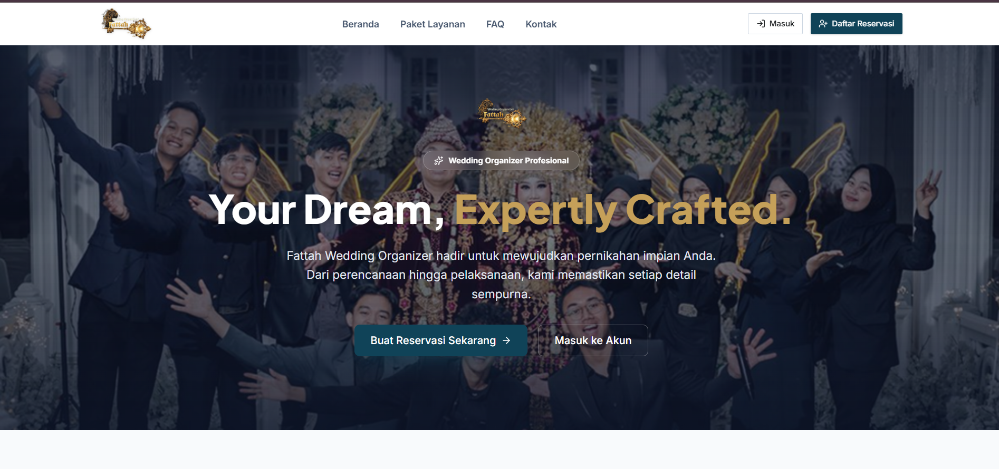
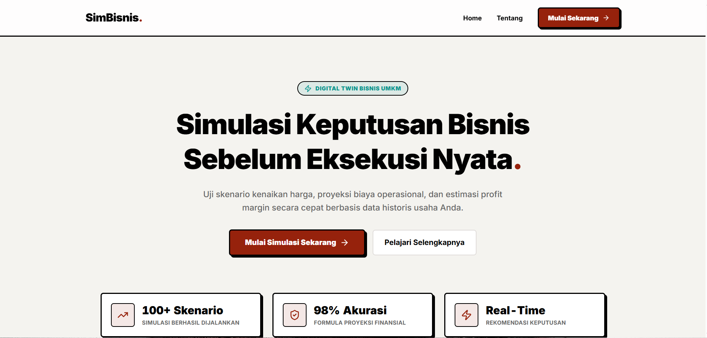
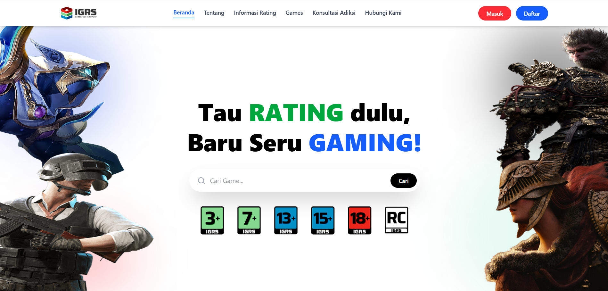
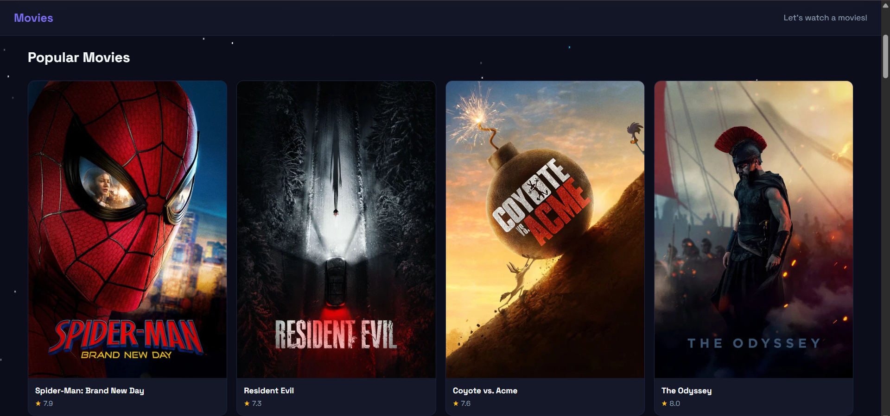
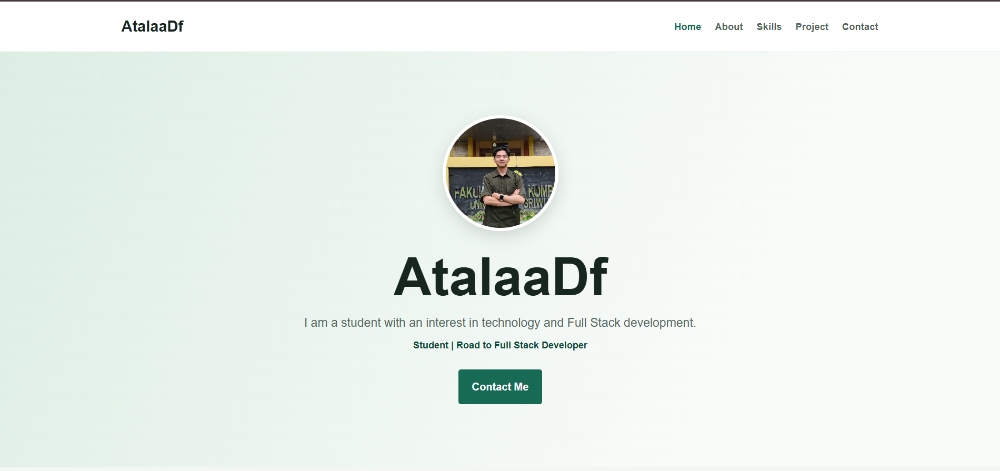

Srifoton 2025
A website for the annual information technology event organized by the Sriwijaya University Informatics Student Association.
Technology: Next.js
Visit project
A website for the annual information technology event organized by the Sriwijaya University Informatics Student Association.
Technology: Next.js
Visit project
An application designed to streamline schedule management, worker assignments, and event reservations; created to fulfill the GDGoC Front-End Development final project.
Technology: React, Tailwind CSS, Supabase
Visit project
A business decision simulation tool for UMKM. SimBisnis projects the impact of hypothetical decisions.
Technology: React, Tailwind CSS, Supabase
Visit project
This project is a redesigned web application for the Indonesia Game Rating System (IGRS), based on the Regulation of the Minister of Communication and Informatics No. 2/2024.
Technology: React, Tailwind CSS, Prisma ORM, MySQL
Visit project
A movie database website that allows users to browse and search for their favorite films.
Technology: React, Tailwind CSS, Open Movie Database (OMDB) API
Visit project
A practice project for presenting a personal profile, skills, and contact information in a simple website.
Technology: HTML and CSS
Dummy project Visit project